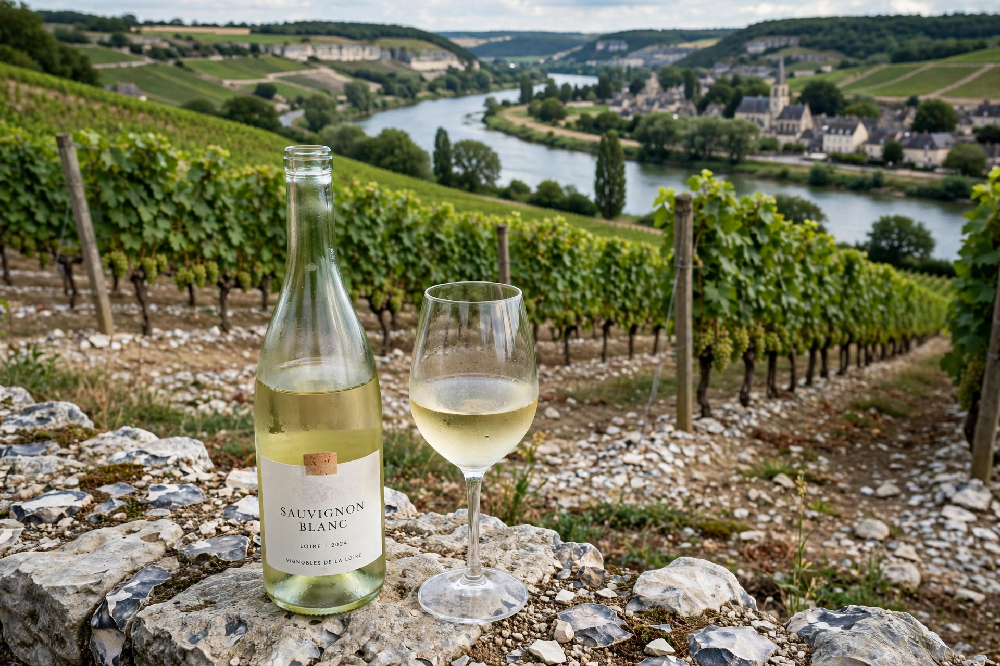

| Pouilly-Fumé AOC | |
|---|---|
| Type | Appellation d'origine contrôlée |
| Year established | 1937 |
| Country | France |
| Subregions | Loire Valley |
| Climate region | Continental |
| Grapes produced | Sauvignon blanc |
Pouilly-Fumé is an appellation d'origine contrôlée (AOC) for Sauvignon blanc wines that come from the vicinity of Pouilly-sur-Loire, in France's upper Loire Valley. The wines are noted for their flinty, smoky aroma — fumé means "smoked" in French — which is traditionally attributed to the flint (silex) soils of the region.

The appellation covers vineyards in the communes around Pouilly-sur-Loire in the Nièvre department, on the eastern bank of the Loire, opposite the better-known vineyards of Sancerre. Its soils include Kimmeridgian marl, limestone, and flinty clay, which produce wines with marked minerality and a characteristic "gunflint" aroma.
Pouilly-Fumé is made entirely from Sauvignon blanc and is typically dry, crisp and aromatic, with notes of citrus, gooseberry, and white flowers, and a smoky mineral finish. The wines are generally drunk young, though the best examples can age for several years. The appellation should not be confused with Pouilly-Fuissé, a Chardonnay wine from the Mâconnais in Burgundy.